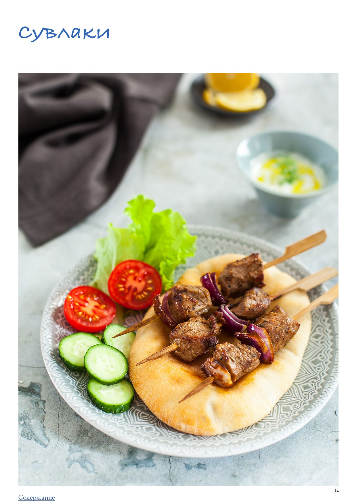

Сувлаки — небольшие шашлычки в маринаде из оливкового масла с добавлением лимонного сока, орегано и специй. Сухую смесь специй можно заготовить заранее впрок, тогда останется добавить лишь лимонный сок и оливковое масло — в этом случае используйте гранулированный чеснок вместо свежего. В Греции и на Кипре подобные смеси можно найти в магазинах и на рынках.
Для сувлаки лучше использовать мясо, которое пригодно для быстрого приготовления, но при этом остается сочным: лопаточную часть ягненка или куриное бедро.
Мы предлагаем самый простой способ: жарить шашлычки в духовке на бамбуковых шпажках, под кончики которых можно положить фольгу, чтобы не подгорели. Очень удобно готовить шашлычки в аэрогриле — там они жарятся буквально 6–8 минут, или в прижимном гриле.
Подавать можно с соусом дзадзики, томатным соусом, соусом с тхиной. С бараниной также хорош зеленый соус чимичури. Можно дополнить гарниром — запеченным картофелем, свежими овощами.